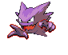

-
Bulbasaur #001

- Grama
- Veneno
Há uma semente de planta em suas costas desde o dia que este Pókemon nasce. A semente cresce lentamente.
-
Ivysaur #002

- Grama
- Veneno
Quando o bulbo em suas costas cresce, parece perder a capacidade de ficar de pé em suas patas traseiras.
-
Venusaur #003

- Grama
- Veneno
Sua planta floresce quando está absorvendo energia solar. Ele permanece em movimento para buscar a luz solar.
-
Charmander #004

- Fogo
Tem preferência por coisas quentes. Quando chove, diz-se que o vapor jorra da ponta de sua cauda.
-
Charmeleon #005

- Fogo
Tem uma natureza bárbara. Na batalha, ele chicoteia sua cauda ardente e corta com garras afiadas.
-
Charizard #006

- Fogo
Ele cospe fogo que é quente o suficiente para derreter pedregulhos. Pode causar incêndios florestais soprando chamas.
-
Squirtle #007

- Água
Quando ele retrai seu longo pescoço em sua concha, ele esguicha água com força vigorosa.
-
Wartortle #008

- Água
É reconhecido como um símbolo de longevidade. Se sua concha tem algas, esse Wartortle é muito antigo.
-
Blastoise #009

- Água
Ele esmaga seu inimigo sob seu corpo pesado para causar desmaios. Em uma pitada, ele se retirará dentro de sua concha.
-
Caterpie #010

- Inseto
Para proteção, ele libera um fedor horrível da antena em sua cabeça para afastar os inimigos.
-
Metapod #011

- Inseto
Está esperando o momento de evoluir. Nesta fase, só pode endurecer, por isso permanece imóvel para evitar o ataque.
-
Butterfree #012

- Inseto
- Voador
Em batalha, ele bate as asas em grande velocidade para liberar poeira altamente tóxica no ar.
-
Weedle #013

- Inseto
- Veneno
Cuidado com o ferrão afiado em sua cabeça. Ele se esconde na grama e nos arbustos onde come folhas.
-
Kakuna #014

- Inseto
- Veneno
Capaz de se mover apenas ligeiramente. Quando em perigo, pode mostrar seu ferrão e envenenar seu inimigo.
-
Beedrill #015

- Inseto
- Veneno
Tem três ferrões venenosos nas patas dianteiras e na cauda. Eles são usados para espetar seu inimigo repetidamente.
-
Machop #016

- Combate
Todo o seu corpo é composto por músculos. Mesmo sendo do tamanho de uma criança humana, pode arremessar 100 adultos./p>
-
Machoke #017

- Combate
Seu corpo musculoso é tão poderoso que deve usar um cinto de economia de energia para poder regular seus movimentos.
-
Machamp #018

- Combate
Ele balança rapidamente seus quatro braços para balançar seus oponentes com socos e golpes incessantes de todos os ângulos.
-
Slowpoke #019

- Água
- Psíquico
É incrivelmente lento e idiota. Leva cinco segundos para sentir dor quando está sob ataque.
-
Slowbro #020

- Água
- Psíquico
Quando um Slowpoke foi caçar no mar, seu rabo foi mordido por um Shellder. Isso o fez evoluir para Slowbro.
-
Gastly #021

- Fantasma
- Veneno
Ele envolve seu oponente em seu corpo gasoso, enfraquecendo lentamente sua presa ao envenená-la através da pele.
-
Haunter #022
- Fantasma
- Veneno
Ele gosta de se esconder no escuro e bater nos ombros com uma mão gasosa. Seu toque causa estremecimento sem fim.
-
Gengar #023

- Fantasma
- Veneno
Para roubar a vida de seu alvo, ele se esconde na sombra da presa e silenciosamente espera por uma oportunidade.
-
Onix #024

- Pedra
- Terra
À medida que escava o solo, absorve muitos objetos duros. É isso que torna seu corpo tão sólido.
-
Steelix #025

- Ferro
- Terra
Dizem que se um Onix vive mais de 100 anos, sua composição muda para ficar parecida com um diamante.